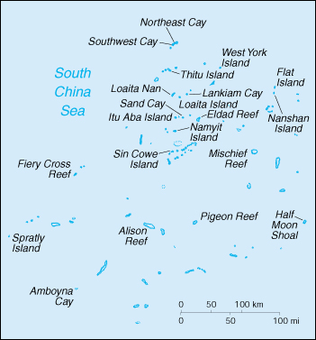

| Spratly Islands |
|
|  | |
| Geography |
Location: Southeastern Asia, group of reefs and islands in the South China Sea, about two-thirds of the way from southern Vietnam to the southern Philippines
Geographic coordinates: 8 38 N, 111 55 E
Map references: Southeast Asia
Area:
total:
less than 5 sq km
land:
less than 5 sq km
water:
0 sq km
note:
includes 100 or so islets, coral reefs, and sea mounts scattered over an area of nearly 410,000 sq km of the central South China Sea
Area - comparative: NA
Land boundaries: 0 km
Coastline: 926 km
Maritime claims: NA
Climate: tropical
Terrain: flat
Elevation extremes:
lowest point:
South China Sea 0 m
highest point:
unnamed location on Southwest Cay 4 m
Natural resources: fish, guano, undetermined oil and natural gas potential
Land use:
arable land:
0%
permanent crops:
0%
permanent pastures:
0%
forests and woodland:
0%
other:
100%
Irrigated land: 0 sq km (1993)
Natural hazards: typhoons; serious maritime hazard because of numerous reefs and shoals
Environment - current issues: NA
Geography - note: strategically located near several primary shipping lanes in the central South China Sea; includes numerous small islands, atolls, shoals, and coral reefs
| People |
Population:
no indigenous inhabitants
note:
there are scattered garrisons occupied by personnel of several claimant states (July 2000 est.)
| Government |
Country name:
conventional long form:
none
conventional short form:
Spratly Islands
Data code: PG
| Economy |
Economy - overview: Economic activity is limited to commercial fishing. The proximity to nearby oil- and gas-producing sedimentary basins suggests the potential for oil and gas deposits, but the region is largely unexplored, and there are no reliable estimates of potential reserves; commercial exploitation has yet to be developed.
| Transportation |
Ports and harbors: none
Airports: 4 (1999 est.)
Airports - with paved runways:
total:
1
914 to 1,523 m:
1 (1999 est.)
Airports - with unpaved runways:
total:
3
914 to 1,523 m:
1
under 914 m:
2 (1999 est.)
| Military |
Military - note: Spratly Islands consist of more than 100 small islands or reefs, of which about 45 are claimed and occupied by China, Malaysia, the Philippines, Taiwan, and Vietnam
| Transnational Issues |
Disputes - international: all of the Spratly Islands are claimed by China, Taiwan, and Vietnam; parts of them are claimed by Malaysia and the Philippines; in 1984, Brunei established an exclusive fishing zone, which encompasses Louisa Reef in the southern Spratly Islands, but has not publicly claimed the island